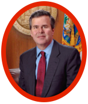
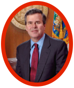

Bernie Sanders

Blah
Hillary Clinton

Martin O'Malley
Jeb
Bush
Marco Rubio
Donald Trump
Bernie Sanders
Hillary Clinton
Martin O'Malley
Jeb
Bush
Marco Rubio
Donald Trump
| Sanders (D) | Pro-choice. | Sanders is in favor of providing free tuition at state colleges for two years. He would allow anyone who is currently paying of a student loan to refinance at a lower rate. | A supporter of the senate immigration bill in 2013, Sanders generally agrees with President Obama that most of the undocumented immigrants currently in the United States should be given a path to citizenship. Additionally, he has supported President Obama's use of executive orders to waive some groups of immigrants, especially those who were brought to the United States as children. | Sanders has a mixed voting record regarding gun control. He voted against the pro-gun-control Brady Bill, asserting that it is individual states, not the federal government, that should be in charge of handling waiting periods for handguns. | While Sanders voted for the Affordable Care Act, he does not believe that the new health care law went far enough; he supports a single-payer system in which health care would be provided to all americans by the federal and state governments. | Sanders has been an avid same-sex marriage advocate for nearly 40 years. |
|---|---|---|---|---|---|---|
| Clinton (D) | Pro-choice. | Recently, Clinton proposed her sweepingly higher education plan - $350 billion which would go towards helping millions pay for college and reduce interest rates for those with student loans. | Clinton advocates for the use of executive powers to waive deportation for some immigrants. She is also in support of providing a path to legal status for undocumented immigrants. | Clinton is a strong supporter of gun control. Her stance on the issue is one of the issues in which she is more "left-leaning" than fellow-candidate Sanders. | Clinton is an avid supporter of the Affordable Care Act; however, she acknowledges that it is not perfect and believes it should be improved upon wherever possible. | Clinton supports marriage equality; however, she has acknowledged that this has not always been her stance on the issue. |
| O'Malley (D) | Pro-choice. | O'Malley encourages more public charter schools. He believes in providing parents, teachers, and students with the resources they need. Regarding student loans, O'Malley has said, "First, Congress must allow students to refinance the debt they have. Unlike homeowners or businesses, student borrowers can't refinance their loans to take advantage of lower interest rates." | O'Malley is in support of providing a path to legal status for undocumented immigrants. He is an advocate for the DREAM Act, which would grant legal status to undocumented Americans that were brought to the United States as children. As Governor in Maryland, he signed a bill which allows undocumented students in Maryland to pay in-state tuition rates. | O'Malley is a strong supporter of increased gun control and critic of the National Rifle Association. He pushes for bans on dozens of assault weapons, in addition to requiring anyone purchasing a handgun to enter a fingerprint database. | O'Malley believes health care should be a right, not a privilege. He is an advocate for Obamacare. | O'Malley supports same-sex marriage. |
| Bush (R) | Bush is in support of the Pain-Capable Unborn Child Protection Act, which would ban abortion after 20 weeks from fertilization, making exceptions for the life of the mother, incest, or rape. | Bush supports the implementation of the Common Core, however is against using federal funds to motivate states to adopt the Common Core standards. While he believed that his brothe's signature education initiative, "No Child Left Behind", is flawed, he was in favor of its reauthorization under the Obama administration. | Bush is in favor of creating an opportunity to gain legal status for those who are in the country illegally, but not a path to citizenship. Additionally, he has said that he wants to decrease the number of people who are allowed to immigrate into the country due to family reasons and increase the number based on their skills. | Bush is in favor of expanding gun owners' rights, including concealed carry and "stand your ground," which allows Florida residents to use deadly force when threatened in public. | Bush is fervently opposed to Obamacare. His alternative is more "market-oriented" and proposes that the government create a support system for those who have medical needs that are much beyond their means. | Bush is against same-sex marriage; however, he believes people should "respect" it. |
| Rubio (R) | In 2013, Rubio co-sponsored a Senate bill to ban abortion after 20 weeks from fertilization, making exceptions for the life of the mother, incest, or rape. | Recently, Rubio called for a complete overhaul of the current higher-education system, claiming that "We need to change how we provide degrees, how those degrees are accessed, how much that access costs, how those costs are paid, and even how those payments are determined." | In 2013, Rubio was one of eight who drafted and pushed a "comprehensive immigration bill" through the Senate, which set up criteria and a path to citizenship for undocumented immigrants and increased the size of border control. However, now, Rubio is pushing for separate bills to first stop the further flow of illegal immigration and second address those who are currently in the country. | Rubio is against increasing gun control; he believes in defending second-amendment rights. | Rubio strongly opposes Affordable Care Act and wants to repeal it. His alternative proposal "calls for new tax credits to help people purchase insurance, revising health insurance regulations and reforming Medicare and Medicaid". | Although Rubio believes that marriage should be solely between a man and a woman and thus disagreed with the Supreme Court decision, he agrees that Americans must abide by the rule. |
| Trump (R) | Trump's beliefs regarding abortion have changed. Prior to 2011, Trump believed that abortion should be banned at some point in the pregnancy. However, in his book 'The America We Deserve,' Trump describes himself as pro-life. | Trump opposes the common core. Regarding United States education in an international context, Trump has said, "We're twenty-sixth in the world. Twenty-five countries are better than us at education. And some of them are like third world countries. But we're becoming a third world country." | In January, Trump called for the securing of Southern borders, indicating that he believes half of the undocumented workers in the United States. are criminals. He is against any path to citizenship for illegal immigrants; however, he supports the expansion of legal immigration from Europe. Additionally, Trump would grant a legal status to those who complete a degree at an American University. | Trump has described himself as a "very strong person on the Second Amendment," and thus is in favor of limiting restrictions on guns; however, he has written that he supports a ban on some assault weapons and a slightly longer waiting period to buy guns. | Trump is fervently opposed to Obamacare and believes it should be repealed and replaced. In The America We Deserve, Trump wrote that he supported universal healthcare and a system similar to Canada’s government-run healthcare program. | Trump believes that marriage should be solely between a man and a woman. He sees it as a state issue. |